<meta charset="utf-8"><title>11/23のコラム note貼り付け</title>
<style>
/* one column of numbered paste steps; text steps vs image steps differ by marker */
:root{--bg:#F5F4F0;--card:#FFFFFF;--ink:#1D2321;--mute:#5F665F;--line:#DCDAD2;--btn:#1F5FBF;--btnok:#2E8B4F;--img:#E9F3EC;--imgink:#22663B;--sans:'IBM Plex Sans JP','Hiragino Sans','Noto Sans JP',sans-serif}
@media (prefers-color-scheme:dark){:root:not([data-theme="light"]){--bg:#171A19;--card:#202423;--ink:#ECEDE8;--mute:#A3AAA2;--line:#343937;--btn:#4D8BE6;--btnok:#3FA866;--img:#1E2C23;--imgink:#8FD3A6;color-scheme:dark}}
:root[data-theme="dark"]{--bg:#171A19;--card:#202423;--ink:#ECEDE8;--mute:#A3AAA2;--line:#343937;--btn:#4D8BE6;--btnok:#3FA866;--img:#1E2C23;--imgink:#8FD3A6;color-scheme:dark}
body{background:var(--bg);color:var(--ink);font-family:var(--sans);font-size:15px;line-height:1.75;padding:20px 16px 60px}
main{max-width:680px;margin:0 auto;display:grid;gap:28px}
header h1{font-size:22px;margin:0 0 6px;text-wrap:balance}
header p{margin:0;color:var(--mute);font-size:14px}
nav{display:flex;gap:8px;flex-wrap:wrap;margin-top:12px}
nav a{border:1px solid var(--line);border-radius:999px;padding:4px 14px;color:var(--ink);text-decoration:none;font-size:14px;background:var(--card)}
.part h2{font-size:18px;line-height:1.5;margin:0 0 12px;text-wrap:balance;display:flex;gap:10px;align-items:baseline;flex-wrap:wrap}
.tag{font-size:13px;background:var(--ink);color:var(--bg);border-radius:6px;padding:1px 9px}
.steps{list-style:none;margin:0;padding:0;display:grid;gap:12px}
.st{background:var(--card);border:1px solid var(--line);border-radius:12px;padding:12px;min-width:0}
.hd{display:flex;align-items:center;gap:8px;margin-bottom:8px}
.no{width:26px;height:26px;border-radius:50%;background:var(--btn);color:#fff;display:inline-flex;align-items:center;justify-content:center;font-size:13px;font-weight:700;flex:0 0 26px}
.im .no{background:var(--btnok)}
.hd em{font-style:normal;font-size:12px;background:var(--img);color:var(--imgink);border-radius:6px;padding:0 8px}
.bx{font-size:13.5px;line-height:1.7;border:1px solid var(--line);border-radius:8px;padding:8px 10px;max-height:110px;overflow:auto;overflow-wrap:anywhere}
.bx.tall{max-height:150px}.bx p{margin:0 0 6px}.bx h2{font-size:14px;margin:8px 0 4px}.bx a{color:var(--btn)}
.st img{display:block;width:100%;max-width:100%;border:1px solid var(--line);border-radius:8px}
.sub{font-size:12.5px;color:var(--mute);margin:6px 0 0}
.cp{width:100%;margin-top:8px;padding:12px;border:0;border-radius:10px;background:var(--btn);color:#fff;font:600 15px var(--sans);cursor:pointer}
.cp.ok{background:var(--btnok)}.cp.dl{background:var(--btnok)}.cp:focus-visible{outline:3px solid var(--ink);outline-offset:2px}
.xh{font-size:15px;margin:20px 0 10px}
.fb{font-size:13px;line-height:1.7;margin:8px 0 0;padding:8px 10px;border-radius:8px;background:var(--img);color:var(--imgink)}
.opts{display:grid;grid-template-columns:repeat(auto-fill,minmax(240px,1fr));gap:10px}
.opt{min-width:0}.opt img{display:block;width:100%;border:1px solid var(--line);border-radius:8px}
.ol{display:flex;align-items:center;gap:8px;margin-top:6px}.ol b{font-size:13px;flex:0 0 auto}.ol .on{font-size:12.5px;color:var(--mute);flex:1;min-width:0}.ol .cp{width:auto;flex:0 0 auto;padding:9px 14px}.ol .cp{margin:0;padding:9px}
.toast{font-size:13px;color:var(--mute);margin-top:6px}
</style>
<main><header><h1>11/23のコラム note貼り付け</h1><p>いま公開済みは7本です。青い番号は文章、緑は画像です。</p><nav><a href="#p1">1</a><a href="#p2">2</a><a href="#p3">3</a><a href="#p4">4</a><a href="#p5">5</a><a href="#p6">6</a><a href="#p7">7</a></nav></header><section class="part" id="p1"><h2><span class="tag">OFF GRID</span>フェルスタッペン「僕のレベルよりずっと下」　ラッセルの事故に辛口</h2><p class="sub">サイトに公開：14:49</p><ol class="steps">
<li class="st im"><div class="hd"><span class="no">1</span><b>見出し画像</b><em>画像</em></div>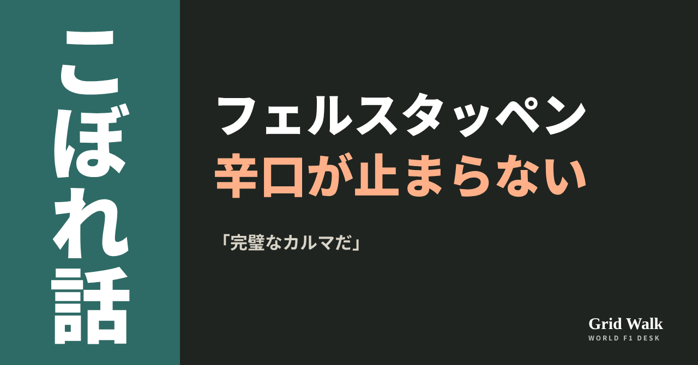<button class="cp dl" data-img="img/verstappen-russell-far-below-20261123.png" data-name="verstappen-russell-far-below-20261123_見出し画像.png">ダウンロード</button></li>
<li class="st"><div class="hd"><span class="no">2</span><b>タイトル</b></div><div class="bx" id="p1t">フェルスタッペン「僕のレベルよりずっと下」　ラッセルの事故に辛口</div><button class="cp" data-plain="p1t">タイトルをコピー</button></li>
<li class="st"><div class="hd"><span class="no">3</span><b>本文</b></div><div class="bx tall" id="p1r"><p>第21戦ラスベガスGPを勝ったレッドブルのマックス・フェルスタッペンは、決勝のあと、メルセデスのジョージ・ラッセルについて、かなりきつい言葉を続けました。イギリスのPlanetF1が11月22日に伝えています。決勝の前に2人の間で何があったかは、11月22日のコラム https://f1gridwalk.github.io/lens/verstappen-russell-front-row-20261122/ で紹介しました。</p><p>決勝前の2人のやりとりと、元の記事へのリンクはサイトで → <a href="https://f1gridwalk.github.io/lens/verstappen-russell-far-below-20261123/?utm_source=note&amp;utm_campaign=verstappen-russell-far-below-20261123">https://f1gridwalk.github.io/lens/verstappen-russell-far-below-20261123/?utm_source=note&amp;utm_campaign=verstappen-russell-far-below-20261123</a></p><blockquote><p>「彼はコースの外でよくしゃべる」「でも、あまり気にならない。僕のレベルよりずっと下だから」「こっちから張り合う意味が、そもそもないんだ」（フェルスタッペン、決勝後の記者会見、PlanetF1／イギリス）</p></blockquote><h2>ミラーに映ったバリア</h2><p>ドイツのMotorsport-Totalによると、決勝では、14コーナー手前の直線でラッセルが何度も前に出て、フェルスタッペンはそのたびに抜き返しました。そして全50周の48周目、ラッセルは5コーナーでタイヤバリアに突っ込みます。F1公式の結果では9位、2点でした。その場面は、フェルスタッペンのミラーにも映っていました（PlanetF1）。</p><blockquote><p>「ミラーを見て、何が起きているか分かったときは、正直、最高だった」「そしてもちろん、そのあと1位でラインを越えて、僕の一日は完成した」（フェルスタッペン、決勝後の記者会見、PlanetF1／イギリス）</p></blockquote><p>カルマという言葉は、フェルスタッペン自身が使っています。PlanetF1によると、同じ会見では、因果はめぐる、という意味の英語の少し乱暴な決まり文句で、この日のことをカルマと呼びました（同紙は乱暴な一語を別の語に置き換えて載せています）。Viaplayの取材には、こう話しています（Motorsport-Total）。</p><blockquote><p>「完璧なカルマだ」（フェルスタッペン、Motorsport-Total／ドイツ）</p></blockquote><h2>コースの外では口だけ、と</h2><p>オランダのメディアには、さらに踏み込みました（PlanetF1）。</p><blockquote><p>「彼のコメントで、やる気が出たりはしない。僕の近くにもいないから」「コースの外では口だけ。コースの上では、今季の彼は完全なジョークだった」（フェルスタッペン、PlanetF1／イギリス）</p></blockquote><p>Motorsport-Totalは、これを、チームメイトのアンドレア・キミ・アントネッリと比べた今季のラッセルへの批判として紹介しています。アントネッリは11月1日のメキシコシティGPで王座を決めています（https://f1gridwalk.github.io/lens/antonelli-title-world-20261102/ ）。</p><blockquote><p>「とりわけ、ある一人にチャンスがなかったからね」「彼には当然の結果だよ」（フェルスタッペン、Motorsport-Total／ドイツ）</p></blockquote><h2>ウォルフは両方を見る</h2><p>メルセデスのトト・ウォルフ代表は、2人の関係をこう見ています（Motorsport-Total）。</p><blockquote><p>「2人はカートの頃から、もう長く知り合いだ」「ちょっと猫とネズミのようだったと思う」「両方からの挑発にすぎない」（ウォルフ、Motorsport-Total／ドイツ）</p></blockquote><blockquote><p>「彼はミスをしなかった。だからレースにも勝った」（ウォルフ、Motorsport-Total／ドイツ）</p></blockquote><p>F1公式によると、ドライバーズ順位はフェルスタッペンが304点で2位、ラッセルはランド・ノリスと同じ264点で4位です。残りはカタールとアブダビの2戦です。</p><p>編集部としては、勝った直後の言葉の強さは、FP3から続いた言い合いに、フェルスタッペンなりのけりをつけたものと見ています。ただ、挑発が両方から出ている以上、残り2戦で2人が近くを走れば、また火がつきそうです。今季のラッセルは、読み解き https://f1gridwalk.github.io/topics/russell-next-year-we-fight-again/ で。</p><p><strong>ラッセルの事故を「完璧なカルマだ」と言ったフェルスタッペン。勝った人の本音として受け止めますか、それとも言いすぎだと思いますか？</strong></p><p>━━━━━━━━━━</p><p><strong>F1 Grid Walk では、世界のF1ニュースを毎日日本語でまとめています。</strong></p><p>海外の記事の要約を、毎日載せています。</p><p><a href="https://f1gridwalk.github.io/">https://f1gridwalk.github.io/</a></p><p>ほかの海外記事も読みたい方は、F1 Grid Walkへ。</p><p><a href="https://f1gridwalk.github.io/lens/verstappen-russell-far-below-20261123/">https://f1gridwalk.github.io/lens/verstappen-russell-far-below-20261123/</a></p><p>━━━━━━━━━━</p><p><a href="https://www.planetf1.com/news/max-verstappen-george-russell-far-below-my-level">出典：PlanetF1（イギリス）</a></p><p><a href="https://www.motorsport-total.com/formel-1/news/verstappen-spottet-nach-russell-crash-ist-so-weit-unter-meinem-niveau-26112206">出典：Motorsport-Total.com（ドイツ）</a></p><p><a href="https://www.formula1.com/en/results/2026/races/1300/las-vegas/race-result">出典：F1公式サイト（イギリス）</a></p><p><a href="https://www.formula1.com/en/results/2026/drivers">出典：F1公式サイト（イギリス）</a></p><p><a href="https://www.formula1.com/en/racing/2026">出典：F1公式サイト（イギリス）</a></p></div><button class="cp" data-rich="p1r">本文をコピー</button></li>
<li class="st"><div class="hd"><span class="no">4</span><b>ハッシュタグ</b></div><div class="bx" id="p1h">#F1 #F1jp #フェルスタッペン #ラッセル #レッドブル #メルセデス #ラスベガスGP #F1こぼれ話 #OFFGRID</div><button class="cp" data-plain="p1h">タグをコピー</button></li>
</ol><h3 class="xh">X</h3><ol class="steps">
<li class="st im"><div class="hd"><b>X用の画像</b><em>画像</em></div>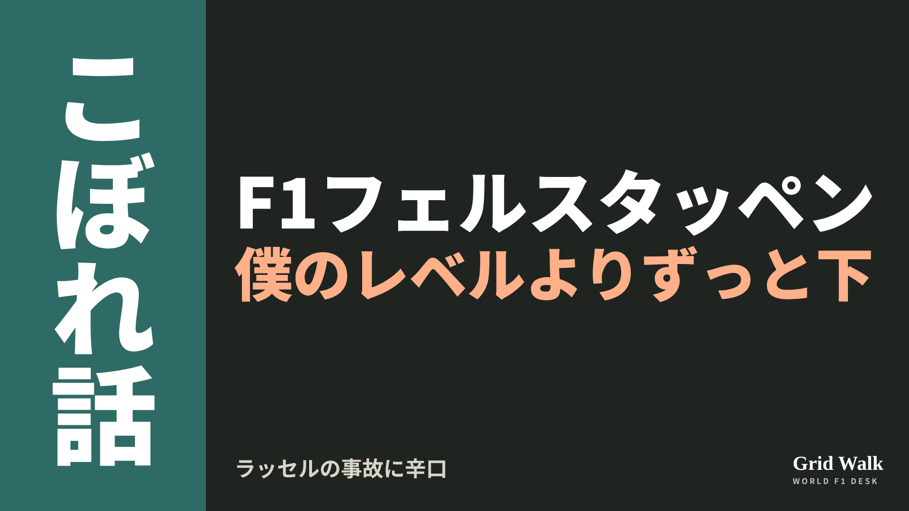<button class="cp dl" data-img="img/x_verstappen-russell-far-below-20261123.png" data-name="x_verstappen-russell-far-below-20261123.png">ダウンロード</button></li>
<li class="st"><div class="hd"><b>① noteをシェアするときの文</b></div><div class="bx" id="p1x0">ラスベガスGPを勝ったフェルスタッペンが、5コーナーでバリアに当たったラッセルについて「僕のレベルよりずっと下」。「完璧なカルマだ」とも話しています。noteにまとめました #F1jp #フェルスタッペン #ラッセル</div><button class="cp" data-plain="p1x0">コピー</button></li>
<li class="st"><div class="hd"><b>② ①への返信</b></div><div class="bx" id="p1x1">ほかの海外記事も読みたい方は、F1 Grid Walkへ。
https://f1gridwalk.github.io/lens/verstappen-russell-far-below-20261123/?utm_source=x&amp;utm_campaign=verstappen-russell-far-below-20261123</div><button class="cp" data-plain="p1x1">コピー</button></li>
<li class="st"><div class="hd"><b>③ ②への返信</b></div><div class="bx" id="p1x2">毎日の海外F1ニュースは、日本語でこちらにまとめています。
https://f1gridwalk.github.io/</div><button class="cp" data-plain="p1x2">コピー</button></li>
</ol></section><section class="part" id="p2"><h2><span class="tag">OFF GRID</span>ルクレール「マラネロのみんなに」謝罪　ハミルトンに接触</h2><p class="sub">サイトに公開：14:50</p><ol class="steps">
<li class="st im"><div class="hd"><span class="no">1</span><b>見出し画像</b><em>画像</em></div>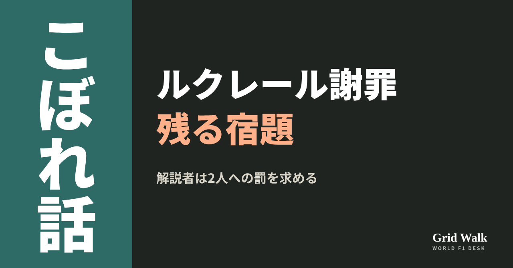<button class="cp dl" data-img="img/leclerc-apology-maranello-20261123.png" data-name="leclerc-apology-maranello-20261123_見出し画像.png">ダウンロード</button></li>
<li class="st"><div class="hd"><span class="no">2</span><b>タイトル</b></div><div class="bx" id="p2t">ルクレール「マラネロのみんなに」謝罪　ハミルトンに接触</div><button class="cp" data-plain="p2t">タイトルをコピー</button></li>
<li class="st"><div class="hd"><span class="no">3</span><b>本文</b></div><div class="bx tall" id="p2r"><p>ラスベガスGPで、チームメイトのルイス・ハミルトンに接触したフェラーリのシャルル・ルクレールが、公に謝罪しました。チームと話したあとに出したもので、イギリスのPlanetF1が11月22日に伝えています。</p><p>元の記事へのリンクと、レース直後の代表と2人の言葉を伝えたコラムはサイトで → <a href="https://f1gridwalk.github.io/lens/leclerc-apology-maranello-20261123/?utm_source=note&amp;utm_campaign=leclerc-apology-maranello-20261123">https://f1gridwalk.github.io/lens/leclerc-apology-maranello-20261123/?utm_source=note&amp;utm_campaign=leclerc-apology-maranello-20261123</a></p><blockquote><p>「二度と起きないよう、何を違うやり方でできたかを見直す」「チームに、マラネロのみんなに、そして今日失った点について申し訳なく思う」（ルクレール、PlanetF1／イギリス）</p></blockquote><p>PlanetF1によると、接触は50周のうちの38周目、7コーナーです。ルクレールはハミルトンの内側に飛び込み、縁石で跳ねてハミルトンの車の横に当たりました。ハミルトンは内側に余地を残すよう、少しハンドルを切っていたといいます。F1公式の結果では、ルクレールは衝突を起こしたとして10秒加算を受け10位・1点、ハミルトンは7位・6点でした。レース直後の代表と2人の言葉は、コラム https://f1gridwalk.github.io/lens/ferrari-leclerc-hamilton-contact-20261122/ で紹介しています。</p><h2>本人は「隙間があると思った」</h2><p>ドイツのF1-Insiderによると、ルクレールはレース後、こう話しました。</p><blockquote><p>「本当に気分が悪い」「隙間があると思った。それまでは本当に慎重に走っていた」「ルイスは僕が見えていなくて、急に隙間がなくなった」（ルクレール、F1-Insider／ドイツ）</p></blockquote><p>接触の前、2人は無線で互いの走りに不満を言っていたと同じ記事は書いています。イタリアのIl Fatto Quotidianoによると、レース直後、フレデリック・バスール代表は無線でルクレールに、車を降りたらまず自分のところへ来るよう伝えました。フェラーリの代表になってから初めてのことだといいます。サイトの要約は https://f1gridwalk.github.io/news/de-f1insider-vasseur-leclerc-rapport/ と https://f1gridwalk.github.io/news/it-ilfatto-ferrari-leclerc-hamilton-vegas/ にあります。</p><h2>代表は、ほかのチームのチームメイトを引き合いに</h2><p>PlanetF1によると、バスールはレース後、こう話しました。</p><blockquote><p>「でも、うちのドライバーは、前や後ろにいたほかのチームメイトたちのように、違うやり方で対処するべきだった」「シャルルはミスをわかっていて謝った。でも、それで結果は変わらない」（バスール、PlanetF1／イギリス）</p></blockquote><p>ハミルトンの言葉は、F1-Insiderから。</p><blockquote><p>「難しいレースだった。いくつかの出来事を除けば、実は楽しかった」（ハミルトン、F1-Insider／ドイツ）</p></blockquote><p>F1公式の順位表では、フェラーリはコンストラクターズ2位で、3位レッドブルとは77点差、4位マクラーレンとは86点差です。PlanetF1は、この接触で2位を決められなかったと書いています。</p><h2>グロック「何か罰を考えなければ」</h2><p>F1-Insiderによると、Skyの解説者ティモ・グロックは、2人の争いをこう見ています。</p><blockquote><p>「あれは、チームのボスはだれかを見せなければ、という意識的なものだ」「そのせいで、お互いが邪魔になっている」（グロック、F1-Insider／ドイツ）</p></blockquote><p>グロックは、ハミルトンが自分のラインを守っていれば接触は避けられたと見ています。そのうえで代表に手を打つよう求め、冗談まじりにこう話しました。</p><blockquote><p>「何か罰を考えなければならない」「2人を一つの部屋に閉じ込めるか、ジャングルのキャンプに送るか。だれがボスなのか、分からせるためにね」（グロック、F1-Insider／ドイツ）</p></blockquote><p>編集部としては、謝罪で話はひと区切りついたものの、接触の受け止め方はまだそろっていないと見ています。ルクレールはハミルトンに自分が見えていなかったと話し、グロックはハミルトンの走り方も挙げています。謝罪のあとにバスールがどんな手を打つのかが、次の焦点になりそうです。</p><p><strong>謝罪のあとのフェラーリ。バスール代表は、2人に何かの罰を与えるべきだと思いますか？</strong></p><p>━━━━━━━━━━</p><p><strong>F1 Grid Walk では、世界のF1ニュースを毎日日本語でまとめています。</strong></p><p>海外の記事の要約を、毎日載せています。</p><p><a href="https://f1gridwalk.github.io/">https://f1gridwalk.github.io/</a></p><p>ほかの海外記事も読みたい方は、F1 Grid Walkへ。</p><p><a href="https://f1gridwalk.github.io/lens/leclerc-apology-maranello-20261123/">https://f1gridwalk.github.io/lens/leclerc-apology-maranello-20261123/</a></p><p>━━━━━━━━━━</p><p><a href="https://www.planetf1.com/news/charles-leclerc-lewis-hamilton-apology-las-vegas-clash">出典：PlanetF1（イギリス）</a></p><p><a href="https://www.ilfattoquotidiano.it/2026/11/22/ferrari-leclerc-hamilton-scontro-caos-incidente-vasseur-furioso/8580201/">出典：Il Fatto Quotidiano（イタリア）</a></p><p><a href="https://f1-insider.com/formel-1-ferrari-zoff-las-vegas-2026-84162/">出典：F1-Insider（ドイツ）</a></p><p><a href="https://www.formula1.com/en/results/2026/races/1300/las-vegas/race-result">出典：F1公式サイト（イギリス）</a></p><p><a href="https://www.formula1.com/en/results/2026/team">出典：F1公式サイト（イギリス）</a></p></div><button class="cp" data-rich="p2r">本文をコピー</button></li>
<li class="st"><div class="hd"><span class="no">4</span><b>ハッシュタグ</b></div><div class="bx" id="p2h">#F1 #F1jp #フェラーリ #ルクレール #ハミルトン #バスール #ラスベガスGP #F1こぼれ話 #OFFGRID</div><button class="cp" data-plain="p2h">タグをコピー</button></li>
</ol><h3 class="xh">X</h3><ol class="steps">
<li class="st im"><div class="hd"><b>X用の画像</b><em>画像</em></div>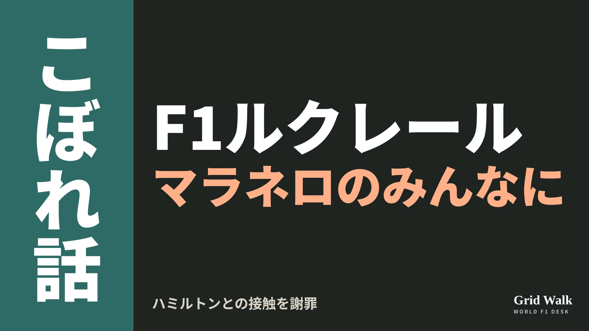<button class="cp dl" data-img="img/x_leclerc-apology-maranello-20261123.png" data-name="x_leclerc-apology-maranello-20261123.png">ダウンロード</button></li>
<li class="st"><div class="hd"><b>① noteをシェアするときの文</b></div><div class="bx" id="p2x0">ハミルトンに接触したルクレールが、チームと話したあと公に謝りました。謝った相手は「マラネロのみんなに」。Skyの解説者グロックは、代表に2人への罰を求めています。noteにまとめました #F1jp #ルクレール #フェラーリ</div><button class="cp" data-plain="p2x0">コピー</button></li>
<li class="st"><div class="hd"><b>② ①への返信</b></div><div class="bx" id="p2x1">ほかの海外記事も読みたい方は、F1 Grid Walkへ。
https://f1gridwalk.github.io/lens/leclerc-apology-maranello-20261123/?utm_source=x&amp;utm_campaign=leclerc-apology-maranello-20261123</div><button class="cp" data-plain="p2x1">コピー</button></li>
<li class="st"><div class="hd"><b>③ ②への返信</b></div><div class="bx" id="p2x2">毎日の海外F1ニュースは、日本語でこちらにまとめています。
https://f1gridwalk.github.io/</div><button class="cp" data-plain="p2x2">コピー</button></li>
</ol></section><section class="part" id="p3"><h2><span class="tag">OFF GRID</span>ピアストリ「表彰台に戻れてうれしい」　17番手から5月以来の3位</h2><p class="sub">サイトに公開：14:51</p><ol class="steps">
<li class="st im"><div class="hd"><span class="no">1</span><b>見出し画像</b><em>画像</em></div>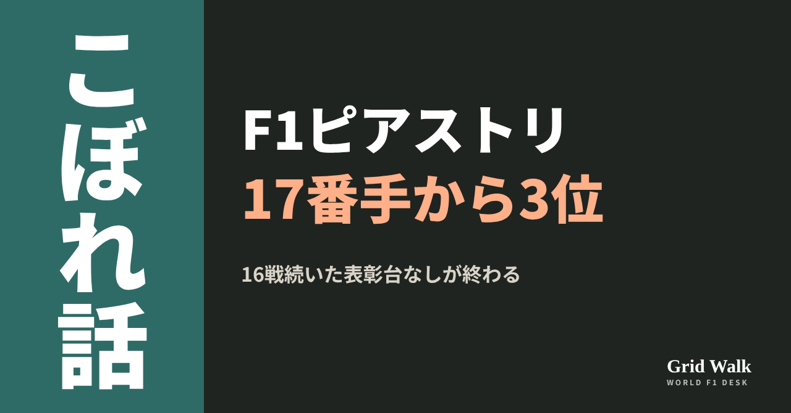<button class="cp dl" data-img="img/piastri-podium-from-17th-20261123.png" data-name="piastri-podium-from-17th-20261123_見出し画像.png">ダウンロード</button></li>
<li class="st"><div class="hd"><span class="no">2</span><b>タイトル</b></div><div class="bx" id="p3t">ピアストリ「表彰台に戻れてうれしい」　17番手から5月以来の3位</div><button class="cp" data-plain="p3t">タイトルをコピー</button></li>
<li class="st"><div class="hd"><span class="no">3</span><b>本文</b></div><div class="bx tall" id="p3r"><p>17番手からスタートして、3位でチェッカー。F1公式の結果では、優勝したレッドブルのマックス・フェルスタッペンとの差は1.529秒でした。マクラーレンのオスカー・ピアストリは、荒れたレースをこう振り返りました。イギリスのRacingNews365が11月22日に伝えています。</p><p>元の記事へのリンクと、ラスベガスのグリッド降格を伝えたコラムへの案内はサイトで → <a href="https://f1gridwalk.github.io/lens/piastri-podium-from-17th-20261123/?utm_source=note&amp;utm_campaign=piastri-podium-from-17th-20261123">https://f1gridwalk.github.io/lens/piastri-podium-from-17th-20261123/?utm_source=note&amp;utm_campaign=piastri-podium-from-17th-20261123</a></p><blockquote><p>「ラスベガスは世界のエンターテインメントの都だと言われる。その一部になるのは、かなり楽しかったと思う」（ピアストリ、RacingNews365／イギリス）</p></blockquote><p>F1公式の結果では、ピアストリの前の表彰台は5月3日のマイアミGPの3位です。そのあと、カナダGPからサンパウロGPまでの16戦は表彰台なし。RacingNews365は、ピアストリのF1でいちばん長い表彰台なしの期間が終わったと書いています。今季の表彰台は、日本GPの2位、マイアミの3位に続いて3回目です。</p><h2>抜くたびに、勝てると思った</h2><p>ピアストリは新しいエンジンへの交換で10グリッド降格を受け、17番手から出ました（RacingNews365）。降格の話はコラム https://f1gridwalk.github.io/lens/piastri-vegas-grid-penalty-20261119/ で。</p><blockquote><p>「もちろん、後ろからのスタートで、どうなるかわからなかった。でも、かなり早く前に進めたし、ずっと一つの大きな集団のままだということも、早いうちにわかった」（ピアストリ、RacingNews365／イギリス）</p></blockquote><p>イタリアのFormula1.itによると、ピアストリはレース直後、元F1ドライバーのデイビッド・クルサードの取材に応じています。記事は、車が長くひとかたまりで走り、スリップストリームと2026年のパワーユニットの特徴が、抜きつ抜かれつの展開を生んだとしています。サイトの要約は https://f1gridwalk.github.io/news/it-formula1it-piastri-podio-vegas/ にあります。</p><blockquote><p>「ある直線ではとても簡単に抜けるのに、次の直線では苦労する。だから、少し運まかせだった」（ピアストリ、RacingNews365／イギリス）</p></blockquote><blockquote><p>「集団の最後尾に追いついたり、誰かを抜いたりするたびに、10秒差で勝てると思った。でも前に出ると、スリップストリームがかなりの仕事をしていたと急に気づくんだ」（ピアストリ、RacingNews365／イギリス）</p></blockquote><h2>2台続けてのピット作業も</h2><p>RacingNews365によると、ピアストリはジョージ・ラッセル、アンドレア・キミ・アントネッリ、ピエール・ガスリー、チームメイトのランド・ノリスと順位を争いました。最後はノリスが2位、ピアストリが3位でした。途中、マクラーレンは2台を続けてピットに入れました。Formula1.itによると、ピアストリはノリスの後ろで待つことになって時間を失いましたが、巻き返しは止まりませんでした。</p><blockquote><p>「2台続けてのピット作業は少し残念だった。でも、最後は大して関係なかった」「みんなが本当に大きな集団の中にいて、その中にいるのは奇妙な感じだった」（ピアストリ、RacingNews365／イギリス）</p></blockquote><blockquote><p>「とんでもないレースだった。でも、また表彰台に戻れてうれしい」（ピアストリ、RacingNews365／イギリス）</p></blockquote><p>F1公式の順位では、ピアストリはドライバーズ7位の167点です。王座は11月1日のメキシコシティGPでアントネッリが決め（コラム https://f1gridwalk.github.io/lens/antonelli-title-world-20261102/ ）、残りはカタールとアブダビの2戦です。</p><p>編集部としては、この3位で今季の不振が終わったとまでは言えないと見ています。本人が、抜けるかどうかは少し運まかせで、スリップストリームの助けが大きかったと話しているからです。それでも、17番手から表彰台まで来たことは、最後の2戦への明るい材料です。今季の流れは、読み解き https://f1gridwalk.github.io/topics/piastri-story-of-my-year/ で。</p><p><strong>5月以来の表彰台。ピアストリは残りのカタールとアブダビでも、表彰台に上がれると思いますか？</strong></p><p>━━━━━━━━━━</p><p><strong>F1 Grid Walk では、世界のF1ニュースを毎日日本語でまとめています。</strong></p><p>海外の記事の要約を、毎日載せています。</p><p><a href="https://f1gridwalk.github.io/">https://f1gridwalk.github.io/</a></p><p>ほかの海外記事も読みたい方は、F1 Grid Walkへ。</p><p><a href="https://f1gridwalk.github.io/lens/piastri-podium-from-17th-20261123/">https://f1gridwalk.github.io/lens/piastri-podium-from-17th-20261123/</a></p><p>━━━━━━━━━━</p><p><a href="https://racingnews365.com/oscar-piastri-ends-long-f1-podium-drought-after-bizarre-las-vegas-chaos">出典：RacingNews365（イギリス）</a></p><p><a href="https://www.formula1.it/news/34148/1/piastri-risorge-a-las-vegas-dal-diciassettesimo-posto-al-podio-nel-caos">出典：Formula1.it（イタリア）</a></p><p><a href="https://www.formula1.com/en/results/2026/drivers/OSCPIA01/oscar-piastri">出典：F1公式サイト（イギリス）</a></p><p><a href="https://www.formula1.com/en/results/2026/races/1284/miami/race-result">出典：F1公式サイト（イギリス）</a></p><p><a href="https://www.formula1.com/en/results/2026/races/1300/las-vegas/race-result">出典：F1公式サイト（イギリス）</a></p><p><a href="https://www.formula1.com/en/results/2026/drivers">出典：F1公式サイト（イギリス）</a></p><p><a href="https://www.formula1.com/en/racing/2026">出典：F1公式サイト（イギリス）</a></p></div><button class="cp" data-rich="p3r">本文をコピー</button></li>
<li class="st"><div class="hd"><span class="no">4</span><b>ハッシュタグ</b></div><div class="bx" id="p3h">#F1 #F1jp #マクラーレン #ピアストリ #ノリス #ラスベガスGP #スリップストリーム #F1こぼれ話 #OFFGRID</div><button class="cp" data-plain="p3h">タグをコピー</button></li>
</ol><h3 class="xh">X</h3><ol class="steps">
<li class="st im"><div class="hd"><b>X用の画像</b><em>画像</em></div>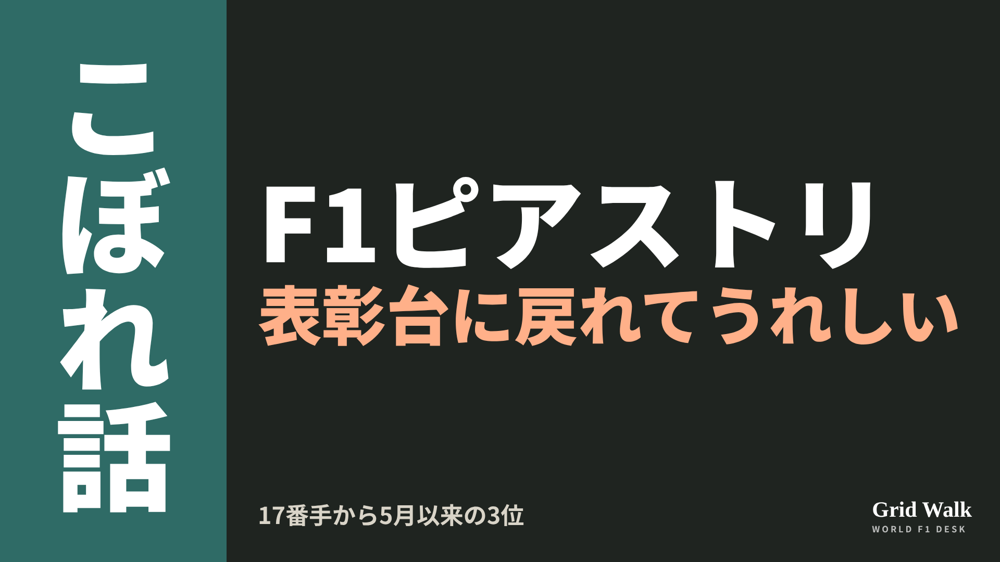<button class="cp dl" data-img="img/x_piastri-podium-from-17th-20261123.png" data-name="x_piastri-podium-from-17th-20261123.png">ダウンロード</button></li>
<li class="st"><div class="hd"><b>① noteをシェアするときの文</b></div><div class="bx" id="p3x0">ピアストリがラスベガスGPで17番手から3位に。F1公式の結果では5月のマイアミGP以来の表彰台です。本人は「表彰台に戻れてうれしい」。noteにまとめました #F1jp #ピアストリ #マクラーレン</div><button class="cp" data-plain="p3x0">コピー</button></li>
<li class="st"><div class="hd"><b>② ①への返信</b></div><div class="bx" id="p3x1">ほかの海外記事も読みたい方は、F1 Grid Walkへ。
https://f1gridwalk.github.io/lens/piastri-podium-from-17th-20261123/?utm_source=x&amp;utm_campaign=piastri-podium-from-17th-20261123</div><button class="cp" data-plain="p3x1">コピー</button></li>
<li class="st"><div class="hd"><b>③ ②への返信</b></div><div class="bx" id="p3x2">毎日の海外F1ニュースは、日本語でこちらにまとめています。
https://f1gridwalk.github.io/</div><button class="cp" data-plain="p3x2">コピー</button></li>
</ol></section><section class="part" id="p4"><h2><span class="tag">OFF GRID</span>リンドブラッド「いちばん奇妙なことだった」　6番手で消えたスピン</h2><p class="sub">サイトに公開：14:52</p><ol class="steps">
<li class="st im"><div class="hd"><span class="no">1</span><b>見出し画像</b><em>画像</em></div>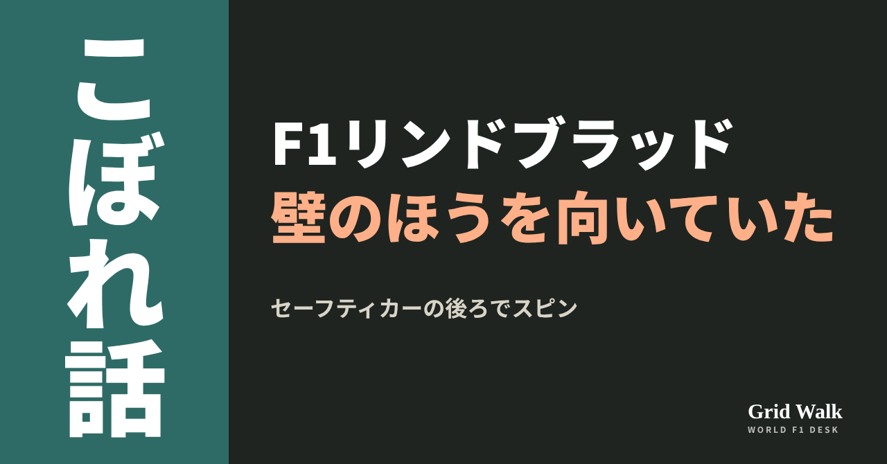<button class="cp dl" data-img="img/lindblad-strange-problem-20261123.png" data-name="lindblad-strange-problem-20261123_見出し画像.png">ダウンロード</button></li>
<li class="st"><div class="hd"><span class="no">2</span><b>タイトル</b></div><div class="bx" id="p4t">リンドブラッド「いちばん奇妙なことだった」　6番手で消えたスピン</div><button class="cp" data-plain="p4t">タイトルをコピー</button></li>
<li class="st"><div class="hd"><span class="no">3</span><b>本文</b></div><div class="bx tall" id="p4r"><p>第21戦ラスベガスGPで、レーシングブルズの19歳、アービッド・リンドブラッドは5番手からスタートしました。イギリスのRacingNews365によると、序盤には3番手まで上がっています。ところが20周目、セーフティカーの後ろでスピンし、そのままレースを終えています。何が起きたのか。本人にも、まだわからないといいます。</p><p>元の記事へのリンクと、リンドブラッドの1年目を追った読み解きへの案内はサイトで → <a href="https://f1gridwalk.github.io/lens/lindblad-strange-problem-20261123/?utm_source=note&amp;utm_campaign=lindblad-strange-problem-20261123">https://f1gridwalk.github.io/lens/lindblad-strange-problem-20261123/?utm_source=note&amp;utm_campaign=lindblad-strange-problem-20261123</a></p><p>同媒体によると、リンドブラッドはレースのあと、RacingNews365などの取材にこう話しました。</p><blockquote><p>「正直、何が起きたのかわからない」「シフトがすごく悪かった。でも、結局は僕のミスだ。それを言い訳にしても意味がない」（リンドブラッド、RacingNews365／イギリス）</p></blockquote><h2>6番手で、冷えたタイヤを温めていた</h2><p>RacingNews365によると、スピンしたとき、リンドブラッドは6番手を走っていました。冷えたタイヤに熱を入れようとしている最中にクルマのコントロールを失い、もう一度走り出すことはできませんでした。F1公式の結果では、50周のレースのうち19周を走ったところでリタイアし、完走扱いになっていません。</p><blockquote><p>「とても奇妙な感覚で、クルマの中ではほとんど味わったことのないものだった」「何もおかしなことはしていなかった。すごくゆっくりアクセルを踏んでいったら、壁のほうを向いていた」（リンドブラッド、RacingNews365／イギリス）</p></blockquote><blockquote><p>「結局は僕のミスだから、甘んじて受け止める」「でも、なぜなのかわかったとは、今ここでは言えない。今まで経験した中で、いちばん奇妙なことだったから」（リンドブラッド、RacingNews365／イギリス）</p></blockquote><p>そのシフトが何を指すのか、記事に説明はありません。本人は、ミスは自分のものと認めながら、理由はまだつかめていない、という言い方をしています。セーフティカーの間のタイヤの温め方は、ルール辞典 https://f1gridwalk.github.io/deep/rules/tyre-warm-up/ と https://f1gridwalk.github.io/deep/rules/safety-car/ で。</p><h2>トップチームと戦えた夜</h2><p>RacingNews365は、順位が大きく入れ替わる荒れた展開のおかげで、リンドブラッドのVCARB 03がトップ4チームと争えていたと書いています。だからこそ、悔しさも大きかったようです。</p><blockquote><p>「かなり楽しかった。トップチームと戦えることは、めったにないから」「あの位置にいたのに、それを生かせなかったのが、本当に悔しい」（リンドブラッド、RacingNews365／イギリス）</p></blockquote><blockquote><p>「飲み込むのが難しい一戦になる」「今日は幸運にも、特別な何かを手にできる位置にいたんだから」（リンドブラッド、RacingNews365／イギリス）</p></blockquote><p>点は点として、世界最高のドライバーたちとレースをして楽しめたことにも触れています。</p><p>F1公式によると、リンドブラッドの今季の点は38点のままで、ドライバーズランキングは11位です。チームメイトのリアム・ローソンは、ハジャーへの10秒加算のあとの正式結果で14位、0点。レーシングブルズはコンストラクターズ5位、114点。今季は残り2戦、カタール（第22戦、11月27〜29日）とアブダビ（第23戦）です。予選の5番手はコラム https://f1gridwalk.github.io/lens/vegas-qualifying-verstappen-pole-20261121/ 、決勝で消えたほかの車はコラム https://f1gridwalk.github.io/lens/albon-dns-perez-camara-20261122/ 、この1年目の歩みは読み解き https://f1gridwalk.github.io/topics/lindblad-until-you-hit-the-wall/ で。</p><p>編集部としては、ミスは自分のものと認め、それでも理由はわからないと正直に言うところに、この新人の誠実さが出ていると見ています。ゆっくりアクセルを踏んでいただけという説明と、ひどいシフトという言葉が、どうつながるのか。答えの手がかりは、カタールの走りに出てくるかもしれません。</p><p><strong>セーフティカーの後ろで消えた6番手。あなたは、これをルーキーのミスと見ますか、それともクルマの何かが起きたと思いますか？</strong></p><p>━━━━━━━━━━</p><p><strong>F1 Grid Walk では、世界のF1ニュースを毎日日本語でまとめています。</strong></p><p>海外の記事の要約を、毎日載せています。</p><p><a href="https://f1gridwalk.github.io/">https://f1gridwalk.github.io/</a></p><p>ほかの海外記事も読みたい方は、F1 Grid Walkへ。</p><p><a href="https://f1gridwalk.github.io/lens/lindblad-strange-problem-20261123/">https://f1gridwalk.github.io/lens/lindblad-strange-problem-20261123/</a></p><p>━━━━━━━━━━</p><p><a href="https://racingnews365.com/devastated-arvid-lindblad-reveals-very-strange-problem-after-costly-mistake">出典：RacingNews365（イギリス）</a></p><p><a href="https://www.formula1.com/en/results/2026/races/1300/las-vegas/race-result">出典：F1公式サイト（イギリス）</a></p><p><a href="https://www.formula1.com/en/results/2026/drivers">出典：F1公式サイト（イギリス）</a></p><p><a href="https://www.formula1.com/en/results/2026/team">出典：F1公式サイト（イギリス）</a></p></div><button class="cp" data-rich="p4r">本文をコピー</button></li>
<li class="st"><div class="hd"><span class="no">4</span><b>ハッシュタグ</b></div><div class="bx" id="p4h">#F1 #F1jp #ラスベガスGP #リンドブラッド #レーシングブルズ #ルーキー #F1こぼれ話 #OFFGRID</div><button class="cp" data-plain="p4h">タグをコピー</button></li>
</ol><h3 class="xh">X</h3><ol class="steps">
<li class="st im"><div class="hd"><b>X用の画像</b><em>画像</em></div>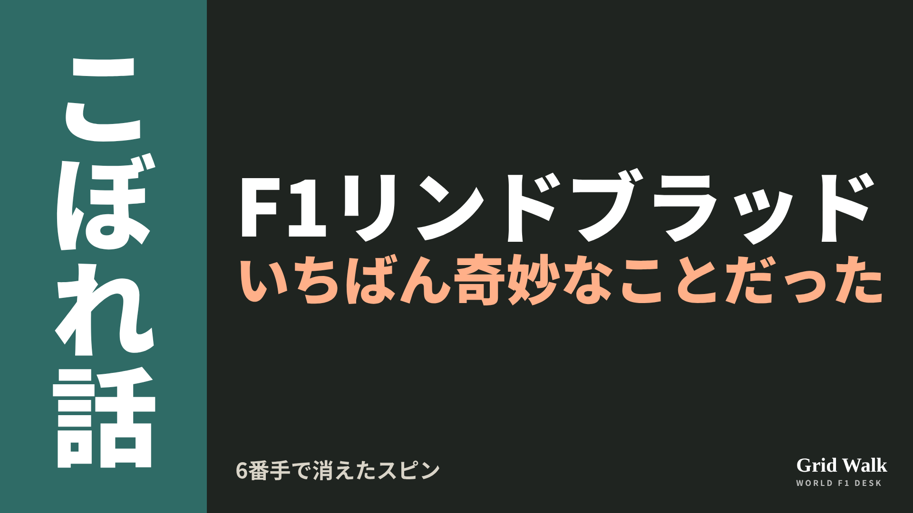<button class="cp dl" data-img="img/x_lindblad-strange-problem-20261123.png" data-name="x_lindblad-strange-problem-20261123.png">ダウンロード</button></li>
<li class="st"><div class="hd"><b>① noteをシェアするときの文</b></div><div class="bx" id="p4x0">5番手スタートのリンドブラッドは、セーフティカーの後ろでスピンしてリタイア。ミスは自分のものと認めつつ「いちばん奇妙なことだった」と話しています。noteにまとめました #F1jp #リンドブラッド</div><button class="cp" data-plain="p4x0">コピー</button></li>
<li class="st"><div class="hd"><b>② ①への返信</b></div><div class="bx" id="p4x1">ほかの海外記事も読みたい方は、F1 Grid Walkへ。
https://f1gridwalk.github.io/lens/lindblad-strange-problem-20261123/?utm_source=x&amp;utm_campaign=lindblad-strange-problem-20261123</div><button class="cp" data-plain="p4x1">コピー</button></li>
<li class="st"><div class="hd"><b>③ ②への返信</b></div><div class="bx" id="p4x2">毎日の海外F1ニュースは、日本語でこちらにまとめています。
https://f1gridwalk.github.io/</div><button class="cp" data-plain="p4x2">コピー</button></li>
</ol></section><section class="part" id="p5"><h2><span class="tag">OFF GRID</span>ノリス「外から見れば、たぶんF1史上最高」　追い抜き352回のラスベガス</h2><p class="sub">サイトに公開：14:53</p><ol class="steps">
<li class="st im"><div class="hd"><span class="no">1</span><b>見出し画像</b><em>画像</em></div>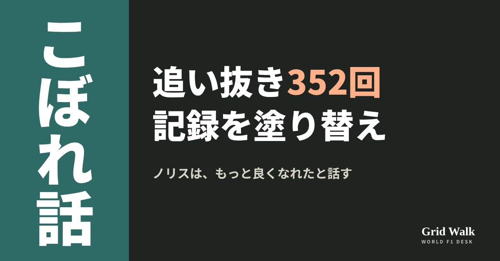<button class="cp dl" data-img="img/vegas-overtake-record-20261123.png" data-name="vegas-overtake-record-20261123_見出し画像.png">ダウンロード</button></li>
<li class="st"><div class="hd"><span class="no">2</span><b>タイトル</b></div><div class="bx" id="p5t">ノリス「外から見れば、たぶんF1史上最高」　追い抜き352回のラスベガス</div><button class="cp" data-plain="p5t">タイトルをコピー</button></li>
<li class="st"><div class="hd"><span class="no">3</span><b>本文</b></div><div class="bx tall" id="p5r"><p>第21戦ラスベガスGPの決勝で、F1の追い抜きの記録が大きく塗り替えられました。イギリスのRacingNews365（英語版）が11月22日に伝えたところでは、追い抜きは352回。これまでの記録は2023年のオランダGPの186回です。ただ、この186回は当時のRacingNews365自身が、F1から直接ではない非公式の数字だと伝えたもので、雨の混じるレースでした。352回の数え方は記事に書かれていません。</p><p>首位交代35回のコラムへの案内と、元の記事へのリンクはサイトで → <a href="https://f1gridwalk.github.io/lens/vegas-overtake-record-20261123/?utm_source=note&amp;utm_campaign=vegas-overtake-record-20261123">https://f1gridwalk.github.io/lens/vegas-overtake-record-20261123/?utm_source=note&amp;utm_campaign=vegas-overtake-record-20261123</a></p><p>50周のレースを制したのはレッドブルのマックス・フェルスタッペンで、2位はマクラーレンのランド・ノリス、3位はオスカー・ピアストリでした（F1公式）。RacingNews365によると、フェルスタッペンの通算75勝目です。首位の入れ替わりは、コラム https://f1gridwalk.github.io/lens/verstappen-wins-vegas-35-lead-changes-20261122/ で書いています。</p><h2>なぜ、これほど抜けたのか</h2><p>RacingNews365は、追い抜きが増えたのは今年の技術規則の大きな変更から直接きたものだと書いています。直線で翼を寝かせるアクティブエアロと、ハイブリッドの電池の使い方の違いが重なり、ブレーキングの手前で時速20〜30kmもの速さの差が生まれたといいます（用語は https://f1gridwalk.github.io/deep/rules/active-aero/ と https://f1gridwalk.github.io/deep/rules/boost-recharge/ で）。</p><p>コースの形も効きました。同じ記事によると、ラスベガスには先頭が引き離せる高速コーナーがありません。滑らかな路面でタイヤの傷みが少なく、車は周回ごとに前の車の真後ろについて走れました。路面温度は12度前後で、ソフトとミディアムのグレイニングもわずかでした。さらに19周目のセーフティカーで、大半の車が同じ1回ストップの作戦にそろいました（ https://f1gridwalk.github.io/deep/rules/safety-car/ ）。</p><h2>2位のノリスは、もっと良くなれたと話す</h2><p>この数字を、走った側はどう見たのか。イギリスのPlanetF1が11月22日に伝えたノリスの言葉です。</p><blockquote><p>「レースという点では、外から見れば、たぶんF1史上最高のレースだったと思う」「何が起きるか、まったくわからなかった。どこからともなく追い抜きが生まれた」（ノリス、PlanetF1／イギリス）</p></blockquote><p>ただ、手放しでほめたわけではありません。</p><blockquote><p>「近づく速さの差が時速20〜30kmになることがある。特に僕らに対してはね」「追い抜きによっては、ブーストを押せば、相手を抜いていける」（ノリス、PlanetF1／イギリス）</p></blockquote><blockquote><p>「それでもレースは良かった。順位を争っていることに変わりはないし、いいところもたくさんあった」（ノリス、PlanetF1／イギリス）</p></blockquote><p>電池の扱いが今と違ったらどうか、という話では、こう続けています。</p><blockquote><p>「電池の使い方が今のようでなくても、追い抜きの数は同じくらいあったと思う」「だから、もっと良くなれた、と言いたいんだ」（ノリス、PlanetF1／イギリス）</p></blockquote><h2>4回のマドリング、352回のラスベガス</h2><p>PlanetF1は、電池に頼る今年の走り方には、昔からのファンの批判もあると書いています。そのうえで、マドリングでは追い抜きが全部で4回だったと比べています。マドリングは、9月13日の第14戦スペインGPの会場です（F1公式、コースは https://f1gridwalk.github.io/deep/rules/circuit-madring/ で）。</p><p>編集部としては、352回という数字は、今年の規則が追い抜きを増やせることを示した一方で、1回ごとの重みには議論が残ると見ています。ノリス自身が、ブーストを押せば抜ける追い抜きがあったと話し、それでもレースは良かったと言っているからです。次は11月27〜29日の第22戦カタールGPです。</p><p><strong>352回の追い抜きで記録を塗り替えたラスベガスの決勝。あなたは、追い抜きは多いほど面白いと思いますか、それとも1回の重みのほうが大事だと思いますか？</strong></p><p>━━━━━━━━━━</p><p><strong>F1 Grid Walk では、世界のF1ニュースを毎日日本語でまとめています。</strong></p><p>海外の記事の要約を、毎日載せています。</p><p><a href="https://f1gridwalk.github.io/">https://f1gridwalk.github.io/</a></p><p>ほかの海外記事も読みたい方は、F1 Grid Walkへ。</p><p><a href="https://f1gridwalk.github.io/lens/vegas-overtake-record-20261123/">https://f1gridwalk.github.io/lens/vegas-overtake-record-20261123/</a></p><p>━━━━━━━━━━</p><p><a href="https://racingnews365.com/significant-f1-record-shattered-during-chaotic-las-vegas-grand-prix">出典：RacingNews365（イギリス）</a></p><p><a href="https://www.planetf1.com/news/lando-norris-las-vegas-overtakes-stat">出典：PlanetF1（イギリス）</a></p><p><a href="https://racingnews365.com/dutch-gp-sets-formula-1-record">出典：RacingNews365（イギリス）</a></p><p><a href="https://www.formula1.com/en/results/2026/races/1300/las-vegas/race-result">出典：F1公式サイト（イギリス）</a></p><p><a href="https://www.formula1.com/en/racing/2026">出典：F1公式サイト（イギリス）</a></p><p><a href="https://www.formula1.com/en/results/2026/races/1294/madrid/race-result">出典：F1公式サイト（イギリス）</a></p></div><button class="cp" data-rich="p5r">本文をコピー</button></li>
<li class="st"><div class="hd"><span class="no">4</span><b>ハッシュタグ</b></div><div class="bx" id="p5h">#F1 #F1jp #ラスベガスGP #追い抜き #ノリス #マクラーレン #フェルスタッペン #アクティブエアロ #2026年規則 #F1こぼれ話 #OFFGRID</div><button class="cp" data-plain="p5h">タグをコピー</button></li>
</ol><h3 class="xh">X</h3><ol class="steps">
<li class="st im"><div class="hd"><b>X用の画像</b><em>画像</em></div>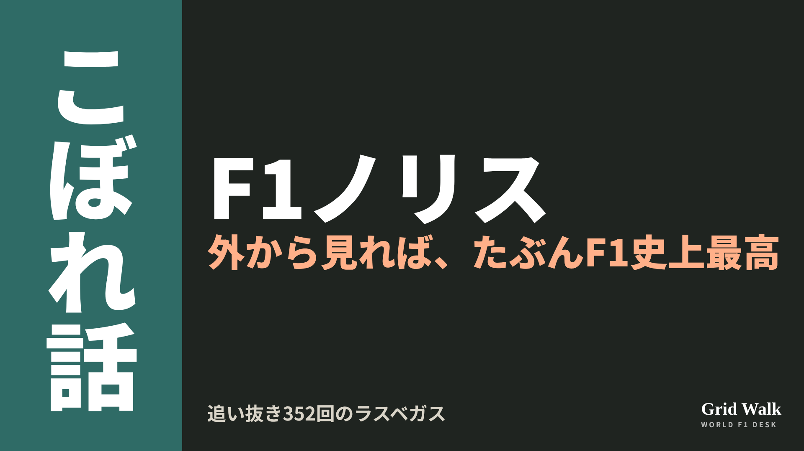<button class="cp dl" data-img="img/x_vegas-overtake-record-20261123.png" data-name="x_vegas-overtake-record-20261123.png">ダウンロード</button></li>
<li class="st"><div class="hd"><b>① noteをシェアするときの文</b></div><div class="bx" id="p5x0">RacingNews365によると、ラスベガスGPの追い抜きは352回。2位のノリスは「外から見れば、たぶんF1史上最高のレースだった」と話しています。noteにまとめました #F1jp #ラスベガスGP #ノリス</div><button class="cp" data-plain="p5x0">コピー</button></li>
<li class="st"><div class="hd"><b>② ①への返信</b></div><div class="bx" id="p5x1">ほかの海外記事も読みたい方は、F1 Grid Walkへ。
https://f1gridwalk.github.io/lens/vegas-overtake-record-20261123/?utm_source=x&amp;utm_campaign=vegas-overtake-record-20261123</div><button class="cp" data-plain="p5x1">コピー</button></li>
<li class="st"><div class="hd"><b>③ ②への返信</b></div><div class="bx" id="p5x2">毎日の海外F1ニュースは、日本語でこちらにまとめています。
https://f1gridwalk.github.io/</div><button class="cp" data-plain="p5x2">コピー</button></li>
</ol></section><section class="part" id="p6"><h2><span class="tag">OFF GRID</span>ハース、残り2戦もカマラ　小松代表「シーズンを一緒に終えられる」</h2><p class="sub">サイトに公開：14:54</p><ol class="steps">
<li class="st im"><div class="hd"><span class="no">1</span><b>見出し画像</b><em>画像</em></div>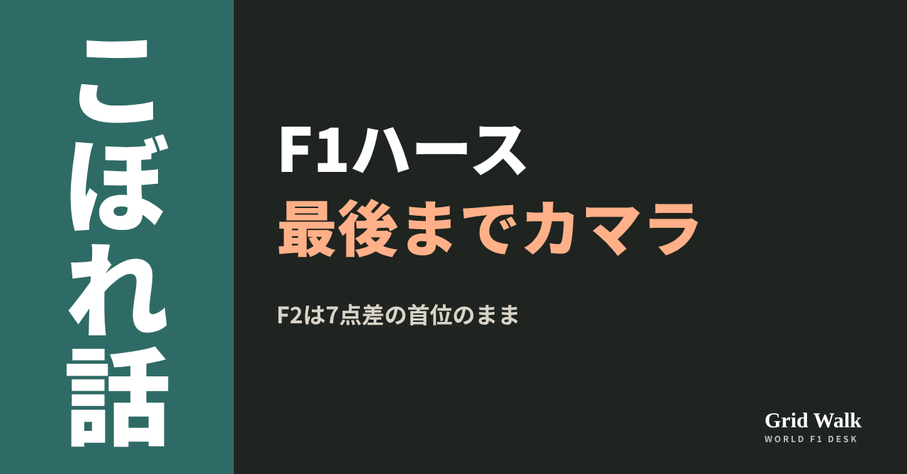<button class="cp dl" data-img="img/haas-camara-final-races-20261123.png" data-name="haas-camara-final-races-20261123_見出し画像.png">ダウンロード</button></li>
<li class="st"><div class="hd"><span class="no">2</span><b>タイトル</b></div><div class="bx" id="p6t">ハース、残り2戦もカマラ　小松代表「シーズンを一緒に終えられる」</div><button class="cp" data-plain="p6t">タイトルをコピー</button></li>
<li class="st"><div class="hd"><span class="no">3</span><b>本文</b></div><div class="bx tall" id="p6r"><p>F2の王座か、F1の残り2戦か。ラファエル・カマラが選んだのはF1でした。ラスベガスGPから数時間後の11月22日、ハースはカマラが最終2戦のカタールGPとアブダビGPに出ると発表しました。ブラジルのGrande Prêmioによると、チームの短い声明はこうです。</p><p>オコンが外れてからの流れと、4人までの決まりの話はサイトで → <a href="https://f1gridwalk.github.io/lens/haas-camara-final-races-20261123/?utm_source=note&amp;utm_campaign=haas-camara-final-races-20261123">https://f1gridwalk.github.io/lens/haas-camara-final-races-20261123/?utm_source=note&amp;utm_campaign=haas-camara-final-races-20261123</a></p><blockquote><p>「ラファ・カマラが、カタールとアブダビでオリー・ベアマンと並んで走ることを確認できます」（ハースの声明、Grande Prêmio／ブラジル）</p></blockquote><p>カマラはF2でインビクタから出ていて、ニコラ・ツォロフに7点差のランキング首位です。ところがF2の最後の2大会は、F1のカタールとアブダビと同じ場所で開かれます。両方には出られないため、F1を選ぶことは、F2の王座争いから降りることを意味します（Grande Prêmio）。サイトの要約は https://f1gridwalk.github.io/news/pt-gp-camara-haas-catar-abudhabi/ にあります。</p><h2>予定より早く来た出番</h2><p>カマラは、2027年からハースで走ることがすでに決まっていました（RacingNews365）。Grande Prêmioは、その機会が思ったより早く来たと書いています。同サイトによると、エステバン・オコンがメキシコシティGPの週末に外され、サーキットにいた平川亮が代わりに走りました。ハースは外した理由を明かしていません（ https://f1gridwalk.github.io/lens/ocon-haas-exit-20261101/ ）。平川は13位でチェッカーを受け、ほかの車への罰で繰り上がって、正式結果10位・1点でした（ https://f1gridwalk.github.io/lens/hirakawa-first-point-20261102/ ）。11月3日、ハースはオコンを今季はもうレースに出さないと発表し、カマラは翌週、地元のサンパウロGPでデビューしました（ https://f1gridwalk.github.io/lens/camara-home-debut-20261105/ ）。</p><p>決勝の結果は、サンパウロが20位（RacingNews365）、ラスベガスが16位（F1公式）です。Grande Prêmioは、ラスベガスの16位をまずまずの内容と書いています。</p><h2>小松代表が挙げた理由</h2><p>RacingNews365が伝えた、小松礼雄代表のコメントです。</p><blockquote><p>「ラファが乗って、シーズンを締めくくれるのを楽しみにしている。ブラジルとアメリカでチームと走った最初の2戦を、さらに積み上げていける」（小松礼雄代表、RacingNews365／イギリス）</p></blockquote><blockquote><p>「ラファがコースでのすべての走行を学ぶ機会として受け止め、チームの中にいっそう溶け込んでくれたことをうれしく思う」（小松礼雄代表、RacingNews365／イギリス）</p></blockquote><blockquote><p>「これでシーズンを一緒に終えられる。比較的短いオフシーズンを前に、そして2027年への準備が始まるなかで、これは全員にとって有利だ」（小松礼雄代表、RacingNews365／イギリス）</p></blockquote><p>同じ記事によると、カマラは21歳。1年目のF3とF2で続けて王座を取る、という記録を狙っていました。これを果たしたのは、オスカー・ピアストリとガブリエル・ボルトレートだけだといいます。RacingNews365は、ハースに専念することで、カマラはおそらくF2の王座をライバルに譲ることになると書いています。</p><p>11月11日のOFF GRID（ https://f1gridwalk.github.io/lens/hirakawa-haas-four-driver-rule-20261111/ ）では、決勝に使えるドライバーは1チーム年4人までという決まりから、不可抗力の例外を除けば、オコンの席はカマラか平川しかいないと書きました。答えはカマラでした。</p><p>編集部としては、カマラとハースはF2王者という肩書きより、来年に向けたF1での実戦の周回を取ったと見ています。小松代表も、比較的短いオフシーズンを前にした利点を挙げています。第22戦カタールGPは11月27〜29日、最終戦のアブダビGPは12月4〜6日です（F1公式）。</p><p><strong>F2の王座を手放して、F1の2戦を走る。カマラのこの選択は、来年のためになると思いますか？</strong></p><p>━━━━━━━━━━</p><p><strong>F1 Grid Walk では、世界のF1ニュースを毎日日本語でまとめています。</strong></p><p>海外の記事の要約を、毎日載せています。</p><p><a href="https://f1gridwalk.github.io/">https://f1gridwalk.github.io/</a></p><p>ほかの海外記事も読みたい方は、F1 Grid Walkへ。</p><p><a href="https://f1gridwalk.github.io/lens/haas-camara-final-races-20261123/">https://f1gridwalk.github.io/lens/haas-camara-final-races-20261123/</a></p><p>━━━━━━━━━━</p><p><a href="https://grandepremio.com/br/f1/camara-abre-mao-do-titulo-na-f2-e-disputa-gps-do-catar-e-de-abu-dhabi-com-haas-na-f1/">出典：Grande Prêmio（ブラジル）</a></p><p><a href="https://racingnews365.com/haas-confirm-driver-line-up-decision-for-final-two-f1-2026-races">出典：RacingNews365（イギリス）</a></p><p><a href="https://www.formula1.com/en/results/2026/races/1300/las-vegas/race-result">出典：F1公式サイト（イギリス）</a></p><p><a href="https://www.formula1.com/en/racing/2026">出典：F1公式サイト（イギリス）</a></p></div><button class="cp" data-rich="p6r">本文をコピー</button></li>
<li class="st"><div class="hd"><span class="no">4</span><b>ハッシュタグ</b></div><div class="bx" id="p6h">#F1 #F1jp #ハース #カマラ #ベアマン #小松礼雄 #F2 #カタールGP #アブダビGP #F1こぼれ話 #OFFGRID</div><button class="cp" data-plain="p6h">タグをコピー</button></li>
</ol><h3 class="xh">X</h3><ol class="steps">
<li class="st im"><div class="hd"><b>X用の画像</b><em>画像</em></div>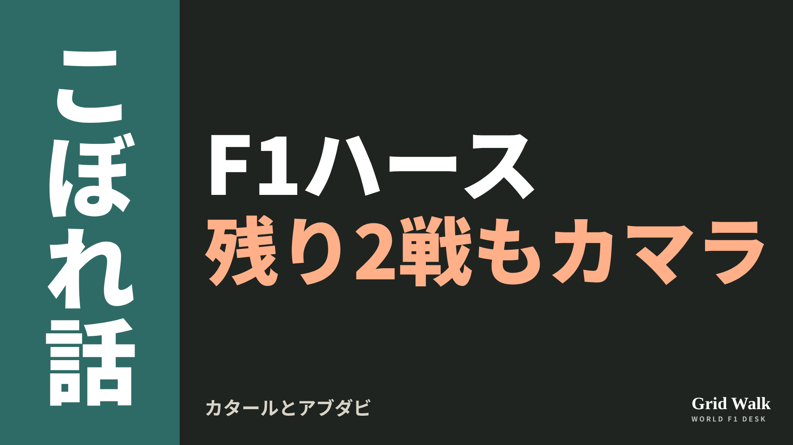<button class="cp dl" data-img="img/x_haas-camara-final-races-20261123.png" data-name="x_haas-camara-final-races-20261123.png">ダウンロード</button></li>
<li class="st"><div class="hd"><b>① noteをシェアするときの文</b></div><div class="bx" id="p6x0">ハースがカタールGPとアブダビGPもカマラを走らせると発表しました。F2で首位のカマラは、F2の王座争いから降りることになります。noteにまとめました #F1jp #カマラ #ハース</div><button class="cp" data-plain="p6x0">コピー</button></li>
<li class="st"><div class="hd"><b>② ①への返信</b></div><div class="bx" id="p6x1">ほかの海外記事も読みたい方は、F1 Grid Walkへ。
https://f1gridwalk.github.io/lens/haas-camara-final-races-20261123/?utm_source=x&amp;utm_campaign=haas-camara-final-races-20261123</div><button class="cp" data-plain="p6x1">コピー</button></li>
<li class="st"><div class="hd"><b>③ ②への返信</b></div><div class="bx" id="p6x2">毎日の海外F1ニュースは、日本語でこちらにまとめています。
https://f1gridwalk.github.io/</div><button class="cp" data-plain="p6x2">コピー</button></li>
</ol></section><section class="part" id="p7"><h2><span class="tag">OFF GRID</span>ペレス、カタールで5グリッド降格　リタイアで消化できなかった10秒</h2><p class="sub">サイトに公開：14:55</p><ol class="steps">
<li class="st im"><div class="hd"><span class="no">1</span><b>見出し画像</b><em>画像</em></div>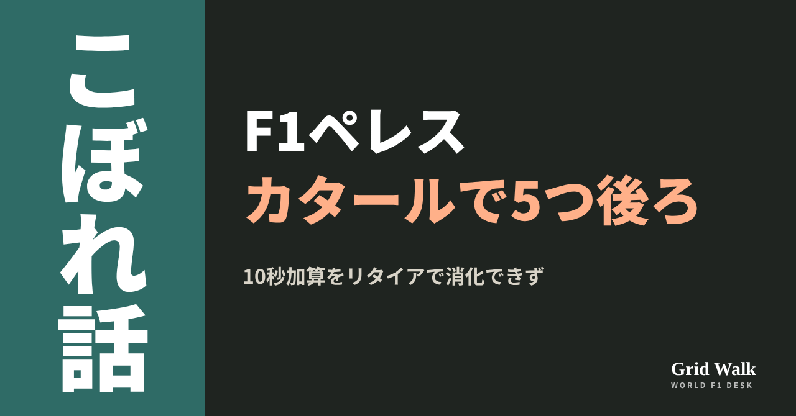<button class="cp dl" data-img="img/perez-qatar-grid-penalty-20261123.png" data-name="perez-qatar-grid-penalty-20261123_見出し画像.png">ダウンロード</button></li>
<li class="st"><div class="hd"><span class="no">2</span><b>タイトル</b></div><div class="bx" id="p7t">ペレス、カタールで5グリッド降格　リタイアで消化できなかった10秒</div><button class="cp" data-plain="p7t">タイトルをコピー</button></li>
<li class="st"><div class="hd"><span class="no">3</span><b>本文</b></div><div class="bx tall" id="p7r"><p>第21戦ラスベガスGPのあと、スチュワードはキャデラックのセルジオ・ペレスに10秒加算の罰を出しました。ただ、ペレスはリタイアしていて消化できないため、罰は次の第22戦カタールGP（11月27〜29日）での5グリッド降格に切り替えられました。F1公式サイトが11月22日に伝えています。</p><p>元の記事へのリンクと、10秒加算が降格に変わる仕組みのルールブックへの案内はサイトで → <a href="https://f1gridwalk.github.io/lens/perez-qatar-grid-penalty-20261123/?utm_source=note&amp;utm_campaign=perez-qatar-grid-penalty-20261123">https://f1gridwalk.github.io/lens/perez-qatar-grid-penalty-20261123/?utm_source=note&amp;utm_campaign=perez-qatar-grid-penalty-20261123</a></p><p>相手はハースのラファエル・カマラです。F1公式サイトによると、レースが折り返しに近づいたころ、ペレスは14コーナーへ向かう手前でカマラを抜きにかかりました。ペレスの右前のタイヤがカマラの左後ろに当たり、2台ともバリアへ。カマラは走り続けて16位でゴールし、ペレスはリタイアしました。ペレスの記録は17周でした（F1公式の結果）。カマラは、母国サンパウロでのデビューから2戦目の週末でした。この夜に途中で消えたほかの車は、コラム https://f1gridwalk.github.io/lens/albon-dns-perez-camara-20261122/ で紹介しました。</p><h2>前の車軸は、ミラーに届かなかった</h2><p>スチュワードはレースのあとに調べ、ペレスに責任があると判断しました。F1公式サイトが引いた裁定の文書には、こうあります。</p><blockquote><p>「この動きの間、11号車の前の車軸が、少なくとも51号車のミラーと並ぶところまで来たことは一度もなかった」「11号車はコーナーを取る権利を得ておらず、衝突の責任はすべて11号車にある」（スチュワードの裁定文書、F1公式サイト／イギリス）</p></blockquote><p>11号車がペレス、51号車がカマラです。よりどころは、ドライビング・スタンダード・ガイドラインです。内側から抜く車が優先されるには、前の車軸が相手のミラーのあたりまで並ぶ必要がある、という目安で、ルールブック https://f1gridwalk.github.io/deep/rules/overtaking-guidelines/ で説明しています。</p><h2>10秒が5グリッドに変わるわけ</h2><p>10秒加算は本来、ピットで止まって消化するか、ゴール後のタイムに足される罰です。リタイアすればどちらもできません。そのときは、次のレースのグリッド降格に切り替えられることがあります（ルールブック https://f1gridwalk.github.io/deep/rules/time-penalty/ ）。同じ夜、衝突を起こしたとして同じ10秒加算を受けたフェラーリのシャルル・ルクレールは完走し、10位で1点を得ています（F1公式の結果）。</p><p>F1公式サイトによると、9月のバクーで衝突の責任を問われたアルピーヌのフランコ・コラピントも、リタイアして10秒加算を消化できず、マレーシアのセパンで開かれた次戦で5グリッド降格になりました。降格の仕組みは、ルールブック https://f1gridwalk.github.io/deep/rules/grid-penalty/ と DEEP GRID https://f1gridwalk.github.io/deep/grid-penalty-why/ で。</p><h2>1年前のラスベガスからも、カタールへ</h2><p>ちょうど1年前にも、ほぼ同じことがありました。F1公式サイトによると、2025年のラスベガスGPの1周目、キック・ザウバーのガブリエル・ボルトレートは1コーナーでランス・ストロールとぶつかり、2周目にリタイアしました。スチュワードは、消化できなかった10秒加算の代わりに、次戦カタールでの5グリッド降格を科し、ペナルティポイントも2点つけています。理由は、ブレーキがきわめて遅かったことでした。</p><p>キャデラックには痛い持ち越しです。F1公式によると、キャデラックはラスベガスを終えてもコンストラクターズ11位で0点。ドライバーズ選手権はペレスが24位、ボッタスが23位で、2人ともまだ0点です。残りはカタールとアブダビの2戦です。1年目の終盤のペレスの言葉は、読み解き https://f1gridwalk.github.io/topics/perez-no-room-for-just-happy-to-be-here/ で。</p><p>編集部としては、残り2戦で初めての点を狙うキャデラックにとって、この5グリッドは、ペレス1人の罰よりも重く響くと見ています。5つ後ろからでは、10位以内までの道のりがそれだけ長くなるからです。</p><p><strong>リタイアで消化できなかった10秒加算を、次のレースの5グリッド降格に切り替える。この仕組みを、あなたは公平だと思いますか？</strong></p><p>━━━━━━━━━━</p><p><strong>F1 Grid Walk では、世界のF1ニュースを毎日日本語でまとめています。</strong></p><p>海外の記事の要約を、毎日載せています。</p><p><a href="https://f1gridwalk.github.io/">https://f1gridwalk.github.io/</a></p><p>ほかの海外記事も読みたい方は、F1 Grid Walkへ。</p><p><a href="https://f1gridwalk.github.io/lens/perez-qatar-grid-penalty-20261123/">https://f1gridwalk.github.io/lens/perez-qatar-grid-penalty-20261123/</a></p><p>━━━━━━━━━━</p><p><a href="https://www.formula1.com/en/latest/article/perez-hit-with-five-place-penalty-in-qatar-after-camara-clash-during-las-vegas-grand-prix.30GG7oJuJ1As0MrkavmStN">出典：F1公式サイト（イギリス）</a></p><p><a href="https://www.formula1.com/en/latest/article/bortoleto-handed-five-place-grid-penalty-for-turn-1-crash-with-stroll-in-las.grSZWRuORCxfRQyzWGaTS">出典：F1公式サイト（イギリス）</a></p><p><a href="https://www.formula1.com/en/latest/article/colapinto-hit-with-five-place-grid-penalty-for-bahrain-gp-in-malaysia-after-baku-collision.3gWVfzDMMr5hReiwTt1fPD">出典：F1公式サイト（イギリス）</a></p><p><a href="https://www.formula1.com/en/results/2026/races/1300/las-vegas/race-result">出典：F1公式サイト（イギリス）</a></p><p><a href="https://www.formula1.com/en/results/2026/team">出典：F1公式サイト（イギリス）</a></p><p><a href="https://www.formula1.com/en/results/2026/drivers">出典：F1公式サイト（イギリス）</a></p></div><button class="cp" data-rich="p7r">本文をコピー</button></li>
<li class="st"><div class="hd"><span class="no">4</span><b>ハッシュタグ</b></div><div class="bx" id="p7h">#F1 #F1jp #ペレス #キャデラック #カマラ #ハース #グリッド降格 #ラスベガスGP #カタールGP #F1こぼれ話 #OFFGRID</div><button class="cp" data-plain="p7h">タグをコピー</button></li>
</ol><h3 class="xh">X</h3><ol class="steps">
<li class="st im"><div class="hd"><b>X用の画像</b><em>画像</em></div>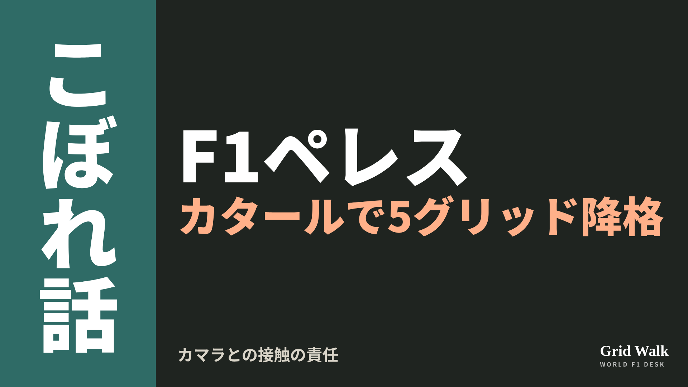<button class="cp dl" data-img="img/x_perez-qatar-grid-penalty-20261123.png" data-name="x_perez-qatar-grid-penalty-20261123.png">ダウンロード</button></li>
<li class="st"><div class="hd"><b>① noteをシェアするときの文</b></div><div class="bx" id="p7x0">ラスベガスGPでカマラと接触したペレスに10秒加算。リタイアで消化できず、次戦カタールでの5グリッド降格に切り替わりました。noteにまとめました #F1jp #ペレス #キャデラック</div><button class="cp" data-plain="p7x0">コピー</button></li>
<li class="st"><div class="hd"><b>② ①への返信</b></div><div class="bx" id="p7x1">ほかの海外記事も読みたい方は、F1 Grid Walkへ。
https://f1gridwalk.github.io/lens/perez-qatar-grid-penalty-20261123/?utm_source=x&amp;utm_campaign=perez-qatar-grid-penalty-20261123</div><button class="cp" data-plain="p7x1">コピー</button></li>
<li class="st"><div class="hd"><b>③ ②への返信</b></div><div class="bx" id="p7x2">毎日の海外F1ニュースは、日本語でこちらにまとめています。
https://f1gridwalk.github.io/</div><button class="cp" data-plain="p7x2">コピー</button></li>
</ol></section></main><script>
function done(b,msg){const t=b.dataset.t||b.textContent;b.dataset.t=t;b.classList.add('ok');b.textContent=msg||'コピーしました';setTimeout(()=>{b.classList.remove('ok');b.textContent=t},2000)}
function selectEl(el){const r=document.createRange();r.selectNodeContents(el);const s=getSelection();s.removeAllRanges();s.addRange(r)}
async function rich(el,b){
  try{await navigator.clipboard.write([new ClipboardItem({'text/html':new Blob([el.innerHTML],{type:'text/html'}),'text/plain':new Blob([el.innerText],{type:'text/plain'})})]);done(b);return}catch(e){}
  selectEl(el);let ok=false;try{ok=document.execCommand('copy')}catch(e){}
  if(ok){getSelection().removeAllRanges();done(b)}else{done(b,'選択しました。コピーしてください')}}
async function plain(el,b){
  try{await navigator.clipboard.writeText(el.innerText);done(b);return}catch(e){}
  selectEl(el);let ok=false;try{ok=document.execCommand('copy')}catch(e){}
  if(ok){getSelection().removeAllRanges();done(b)}else{done(b,'選択しました。コピーしてください')}}
let dlns=null;(async()=>{try{dlns=await window.claude?.use?.("downloads")}catch(e){dlns=null}})();
async function img(src,b){
  b.dataset.t=b.dataset.t||b.textContent;
  if(!dlns){try{dlns=await window.claude?.use?.("downloads")}catch(e){}}
  if(!dlns){b.textContent='ダウンロードできませんでした';setTimeout(()=>{b.textContent=b.dataset.t},3500);return}
  try{const blob=await fetch(src).then(r=>r.blob());b.textContent='保存の確認を開いています…';
    await dlns.save({filename:b.dataset.name,data:blob});done(b,'ダウンロードしました')}
  catch(e){const c=e&&e.code;b.textContent=c==='declined'?'キャンセルしました':c==='rate_limited'?'少し待ってからもう一度押してください':'ダウンロードできませんでした';setTimeout(()=>{b.textContent=b.dataset.t},3500)}}
document.querySelectorAll('.cp').forEach(b=>b.addEventListener('click',()=>{
  if(b.dataset.rich)rich(document.getElementById(b.dataset.rich),b);
  else if(b.dataset.plain)plain(document.getElementById(b.dataset.plain),b);
  else img(b.dataset.img,b)}));
</script>